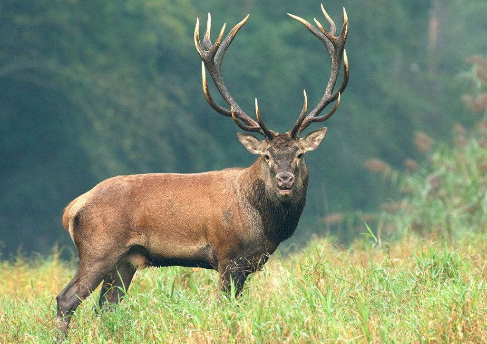
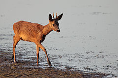

Jeden z największych gatunków z rodziny jeleniowatych. Jelenie ubarwione są zazwyczaj jednolicie, tylko młode są cętkowane na bokach i grzbiecie. Latem brązowopłowe do rudawego, zimą szarawe, z ciemniejszym karkiem u samców. Na szyi mają dłuższe włosy tworzące rodzaj grzywy zachodzącej na kłąb. Grandle (haki) są szczątkowymi kłami znajdującymi się w szczęce, siekaczy w szczęce brak. W żuchwie obok 3 siekaczy z każdej strony, znajduje się po jednym kle, następnie występuje diastema oraz rząd zębów bocznych; po 3 zęby przedtrzonowe i po 3 zęby trzonowe.
W Polsce wiosną 2011 roku liczebność saren oszacowano na 764 tys. osobników. Najliczniej – zagęszczenie w granicach 40–56 osobników na 1000 ha lasów i pól, występowały one na Dolnym Śląsku i na Pomorzu Zachodnim. Licznie – 30–40 szt./1000 ha, zasiedlały zachodnią Polskę, a także południe kraju.
Gatunek inwazyjny poza naturalnym zasięgiem występowania
.
Dzik jest popularnym zwierzęciem łownym i jako taki doczekał się w języku myśliwych wielu szczegółowych określeń, pozwalających w krótkich słowach opisać zwierzę i jego zachowanie. Z czasem część tej terminologii weszła do języka codziennego, a także języka zoologów. W Polsce dzik jest pospolitym przedstawicielem tzw. zwierzyny czarnej, podlega sezonowej ochronie. Samica dzika nazywana jest lochą, samiec odyńcem, a młode warchlakiem, warchlak o charakterystycznym paskowym umaszczeniu – pasiakiem.